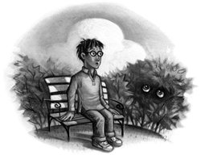

Not for the first time, an argument had broken out over breakfast at number four, Privet Drive. Mr. Vernon Dursley had been woken in the early hours of the morning by a loud, hooting noise from his nephew Harry’s room.
“Third time this week!” he roared across the table. “If you can’t control that owl, it’ll have to go!”
Harry tried, yet again, to explain.
“She’s bored,” he said. “She’s used to flying around outside. If I could just let her out at night —”
“Do I look stupid?” snarled Uncle Vernon, a bit of fried egg dangling from his bushy mustache. “I know what’ll happen if that owl’s let out.”
He exchanged dark looks with his wife, Petunia.
Harry tried to argue back but his words were drowned by a long, loud belch from the Dursleys’ son, Dudley.
“I want more bacon.”
“There’s more in the frying pan, sweetums,” said Aunt Petunia, turning misty eyes on her massive son. “We must build you up while we’ve got the chance. . . . I don’t like the sound of that school food. . . .”
“Nonsense, Petunia, I never went hungry when I was at Smeltings,” said Uncle Vernon heartily. “Dudley gets enough, don’t you, son?”
Dudley, who was so large his bottom drooped over either side of the kitchen chair, grinned and turned to Harry.
“Pass the frying pan.”
“You’ve forgotten the magic word,” said Harry irritably.
The effect of this simple sentence on the rest of the family was incredible: Dudley gasped and fell off his chair with a crash that shook the whole kitchen; Mrs. Dursley gave a small scream and clapped her hands to her mouth; Mr. Dursley jumped to his feet, veins throbbing in his temples.
“I meant ‘please’!” said Harry quickly. “I didn’t mean —”
“WHAT HAVE I TOLD YOU,” thundered his uncle, spraying spit over the table, “ABOUT SAYING THE ‘M’ WORD IN OUR HOUSE?”
“But I —”
“HOW DARE YOU THREATEN DUDLEY!” roared Uncle Vernon, pounding the table with his fist.
“I just —”
“I WARNED YOU! I WILL NOT TOLERATE MENTION OF YOUR ABNORMALITY UNDER THIS ROOF!”
Harry stared from his purple-faced uncle to his pale aunt, who was trying to heave Dudley to his feet.
“All right,” said Harry, “all right . . .”
Uncle Vernon sat back down, breathing like a winded rhinoceros and watching Harry closely out of the corners of his small, sharp eyes.
Ever since Harry had come home for the summer holidays, Uncle Vernon had been treating him like a bomb that might go off at any moment, because Harry Potter wasn’t a normal boy. As a matter of fact, he was as not normal as it is possible to be.
Harry Potter was a wizard — a wizard fresh from his first year at Hogwarts School of Witchcraft and Wizardry. And if the Dursleys were unhappy to have him back for the holidays, it was nothing to how Harry felt.
He missed Hogwarts so much it was like having a constant stomachache. He missed the castle, with its secret passageways and ghosts, his classes (though perhaps not Snape, the Potions master), the mail arriving by owl, eating banquets in the Great Hall, sleeping in his four-poster bed in the tower dormitory, visiting the gamekeeper, Hagrid, in his cabin next to the Forbidden Forest in the grounds, and, especially, Quidditch, the most popular sport in the Wizarding world (six tall goalposts, four flying balls, and fourteen players on broomsticks).
All Harry’s spellbooks, his wand, robes, cauldron, and top-of-the-line Nimbus Two Thousand broomstick had been locked in a cupboard under the stairs by Uncle Vernon the instant Harry had come home. What did the Dursleys care if Harry lost his place on the House Quidditch team because he hadn’t practiced all summer? What was it to the Dursleys if Harry went back to school without any of his homework done? The Dursleys were what wizards called Muggles (not a drop of magical blood in their veins), and as far as they were concerned, having a wizard in the family was a matter of deepest shame. Uncle Vernon had even padlocked Harry’s owl, Hedwig, inside her cage, to stop her from carrying messages to anyone in the Wizarding world.
Harry looked nothing like the rest of the family. Uncle Vernon was large and neckless, with an enormous black mustache; Aunt Petunia was horse-faced and bony; Dudley was blond, pink, and porky. Harry, on the other hand, was small and skinny, with brilliant green eyes and jet-black hair that was always untidy. He wore round glasses, and on his forehead was a thin, lightning-shaped scar.
It was this scar that made Harry so particularly unusual, even for a wizard. This scar was the only hint of Harry’s very mysterious past, of the reason he had been left on the Dursleys’ doorstep eleven years before.
At the age of one year old, Harry had somehow survived a curse from the greatest Dark sorcerer of all time, Lord Voldemort, whose name most witches and wizards still feared to speak. Harry’s parents had died in Voldemort’s attack, but Harry had escaped with his lightning scar, and somehow — nobody understood why — Voldemort’s powers had been destroyed the instant he had failed to kill Harry.
So Harry had been brought up by his dead mother’s sister and her husband. He had spent ten years with the Dursleys, never understanding why he kept making odd things happen without meaning to, believing the Dursleys’ story that he had got his scar in the car crash that had killed his parents.
And then, exactly a year ago, Hogwarts had written to Harry, and the whole story had come out. Harry had taken up his place at wizard school, where he and his scar were famous . . . but now the school year was over, and he was back with the Dursleys for the summer, back to being treated like a dog that had rolled in something smelly.
The Dursleys hadn’t even remembered that today happened to be Harry’s twelfth birthday. Of course, his hopes hadn’t been high; they’d never given him a real present, let alone a cake — but to ignore it completely . . .
At that moment, Uncle Vernon cleared his throat importantly and said, “Now, as we all know, today is a very important day.”
Harry looked up, hardly daring to believe it.
“This could well be the day I make the biggest deal of my career,” said Uncle Vernon.
Harry went back to his toast. Of course, he thought bitterly, Uncle Vernon was talking about the stupid dinner party. He’d been talking of nothing else for two weeks. Some rich builder and his wife were coming to dinner and Uncle Vernon was hoping to get a huge order from him (Uncle Vernon’s company made drills).
“I think we should run through the schedule one more time,” said Uncle Vernon. “We should all be in position at eight o’clock. Petunia, you will be — ?”
“In the lounge,” said Aunt Petunia promptly, “waiting to welcome them graciously to our home.”
“Good, good. And Dudley?”
“I’ll be waiting to open the door.” Dudley put on a foul, simpering smile. “May I take your coats, Mr. and Mrs. Mason?”
“They’ll love him!” cried Aunt Petunia rapturously.
“Excellent, Dudley,” said Uncle Vernon. Then he rounded on Harry. “And you?”
“I’ll be in my bedroom, making no noise and pretending I’m not there,” said Harry tonelessly.
“Exactly,” said Uncle Vernon nastily. “I will lead them into the lounge, introduce you, Petunia, and pour them drinks. At eight-fifteen —”
“I’ll announce dinner,” said Aunt Petunia.
“And, Dudley, you’ll say —”
“May I take you through to the dining room, Mrs. Mason?” said Dudley, offering his fat arm to an invisible woman.
“My perfect little gentleman!” sniffed Aunt Petunia.
“And you?” said Uncle Vernon viciously to Harry.
“I’ll be in my room, making no noise and pretending I’m not there,” said Harry dully.
“Precisely. Now, we should aim to get in a few good compliments at dinner. Petunia, any ideas?”
“Vernon tells me you’re a wonderful golfer, Mr. Mason. . . . Do tell me where you bought your dress, Mrs. Mason. . . .”
“Perfect . . . Dudley?”
“How about — ‘We had to write an essay about our hero at school, Mr. Mason, and I wrote about you.’”
This was too much for both Aunt Petunia and Harry. Aunt Petunia burst into tears and hugged her son, while Harry ducked under the table so they wouldn’t see him laughing.
“And you, boy?”
Harry fought to keep his face straight as he emerged.
“I’ll be in my room, making no noise and pretending I’m not there,” he said.
“Too right, you will,” said Uncle Vernon forcefully. “The Masons don’t know anything about you and it’s going to stay that way. When dinner’s over, you take Mrs. Mason back to the lounge for coffee, Petunia, and I’ll bring the subject around to drills. With any luck, I’ll have the deal signed and sealed before the news at ten. We’ll be shopping for a vacation home in Majorca this time tomorrow.”
Harry couldn’t feel too excited about this. He didn’t think the Dursleys would like him any better in Majorca than they did on Privet Drive.
“Right — I’m off into town to pick up the dinner jackets for Dudley and me. And you,” he snarled at Harry. “You stay out of your aunt’s way while she’s cleaning.”
Harry left through the back door. It was a brilliant, sunny day. He crossed the lawn, slumped down on the garden bench, and sang under his breath:
“Happy birthday to me . . . happy birthday to me . . .”
No cards, no presents, and he would be spending the evening pretending not to exist. He gazed miserably into the hedge. He had never felt so lonely. More than anything else at Hogwarts, more even than playing Quidditch, Harry missed his best friends, Ron Weasley and Hermione Granger. They, however, didn’t seem to be missing him at all. Neither of them had written to him all summer, even though Ron had said he was going to ask Harry to come and stay.
Countless times, Harry had been on the point of unlocking Hedwig’s cage by magic and sending her to Ron and Hermione with a letter, but it wasn’t worth the risk. Underage wizards weren’t allowed to use magic outside of school. Harry hadn’t told the Dursleys this; he knew it was only their terror that he might turn them all into dung beetles that stopped them from locking him in the cupboard under the stairs with his wand and broomstick. For the first couple of weeks back, Harry had enjoyed muttering nonsense words under his breath and watching Dudley tearing out of the room as fast as his fat legs would carry him. But the long silence from Ron and Hermione had made Harry feel so cut off from the magical world that even taunting Dudley had lost its appeal — and now Ron and Hermione had forgotten his birthday.
What wouldn’t he give now for a message from Hogwarts? From any witch or wizard? He’d almost be glad of a sight of his archenemy, Draco Malfoy, just to be sure it hadn’t all been a dream. . . .
Not that his whole year at Hogwarts had been fun. At the very end of last term, Harry had come face-to-face with none other than Lord Voldemort himself. Voldemort might be a ruin of his former self, but he was still terrifying, still cunning, still determined to regain power. Harry had slipped through Voldemort’s clutches for a second time, but it had been a narrow escape, and even now, weeks later, Harry kept waking in the night, drenched in cold sweat, wondering where Voldemort was now, remembering his livid face, his wide, mad eyes —
Harry suddenly sat bolt upright on the garden bench. He had been staring absent-mindedly into the hedge — and the hedge was staring back. Two enormous green eyes had appeared among the leaves.
Harry jumped to his feet just as a jeering voice floated across the lawn.
“I know what day it is,” sang Dudley, waddling toward him.
The huge eyes blinked and vanished.
“What?” said Harry, not taking his eyes off the spot where they had been.
“I know what day it is,” Dudley repeated, coming right up to him.
“Well done,” said Harry. “So you’ve finally learned the days of the week.”
“Today’s your birthday,” sneered Dudley. “How come you haven’t got any cards? Haven’t you even got friends at that freak place?”
“Better not let your mum hear you talking about my school,” said Harry coolly.
Dudley hitched up his trousers, which were slipping down his fat bottom.
“Why’re you staring at the hedge?” he said suspiciously.
“I’m trying to decide what would be the best spell to set it on fire,” said Harry.
Dudley stumbled backward at once, a look of panic on his fat face.
“You c-can’t — Dad told you you’re not to do m-magic — he said he’ll chuck you out of the house — and you haven’t got anywhere else to go — you haven’t got any friends to take you —”
“Jiggery pokery!” said Harry in a fierce voice. “Hocus pocus — squiggly wiggly —”
“MUUUUUUM!” howled Dudley, tripping over his feet as he dashed back toward the house. “MUUUUM! He’s doing you know what!”
Harry paid dearly for his moment of fun. As neither Dudley nor the hedge was in any way hurt, Aunt Petunia knew he hadn’t really done magic, but he still had to duck as she aimed a heavy blow at his head with the soapy frying pan. Then she gave him work to do, with the promise he wouldn’t eat again until he’d finished.
While Dudley lolled around watching and eating ice cream, Harry cleaned the windows, washed the car, mowed the lawn, trimmed the flower beds, pruned and watered the roses, and repainted the garden bench. The sun blazed overhead, burning the back of his neck. Harry knew he shouldn’t have risen to Dudley’s bait, but Dudley had said the very thing Harry had been thinking himself . . . maybe he didn’t have any friends at Hogwarts. . . .
Wish they could see famous Harry Potter now, he thought savagely as he spread manure on the flower beds, his back aching, sweat running down his face.
It was half past seven in the evening when at last, exhausted, he heard Aunt Petunia calling him.
“Get in here! And walk on the newspaper!”
Harry moved gladly into the shade of the gleaming kitchen. On top of the fridge stood tonight’s pudding: a huge mound of whipped cream and sugared violets. A loin of roast pork was sizzling in the oven.
“Eat quickly! The Masons will be here soon!” snapped Aunt Petunia, pointing to two slices of bread and a lump of cheese on the kitchen table. She was already wearing a salmon-pink cocktail dress.
Harry washed his hands and bolted down his pitiful supper. The moment he had finished, Aunt Petunia whisked away his plate. “Upstairs! Hurry!”
As he passed the door to the living room, Harry caught a glimpse of Uncle Vernon and Dudley in bow ties and dinner jackets. He had only just reached the upstairs landing when the doorbell rang and Uncle Vernon’s furious face appeared at the foot of the stairs.
“Remember, boy — one sound —”
Harry crossed to his bedroom on tiptoe, slipped inside, closed the door, and turned to collapse on his bed.
The trouble was, there was already someone sitting on it.